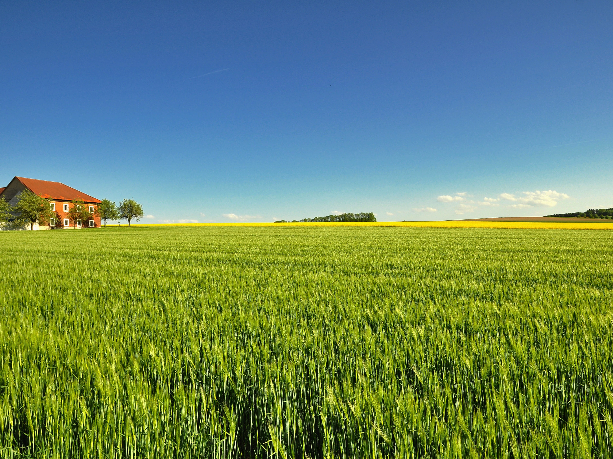

Your one-stop solution for agricultural insights. Navigate through our services using the menu above.
We provide predictions for crops, recommendations for fertilizers, and classification of soil types to help you optimize your farming practices.
